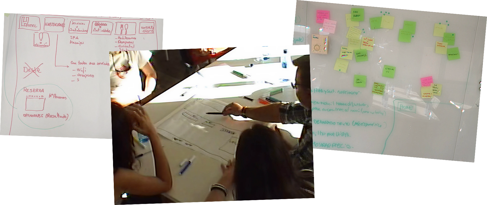
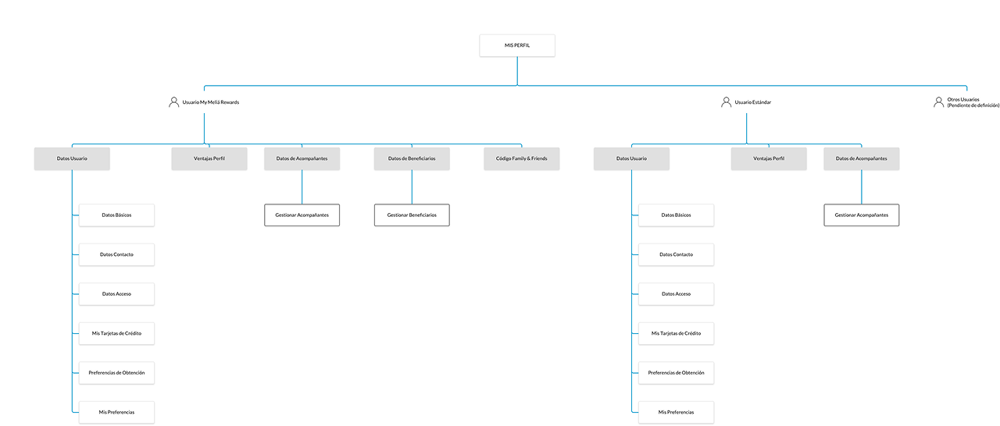
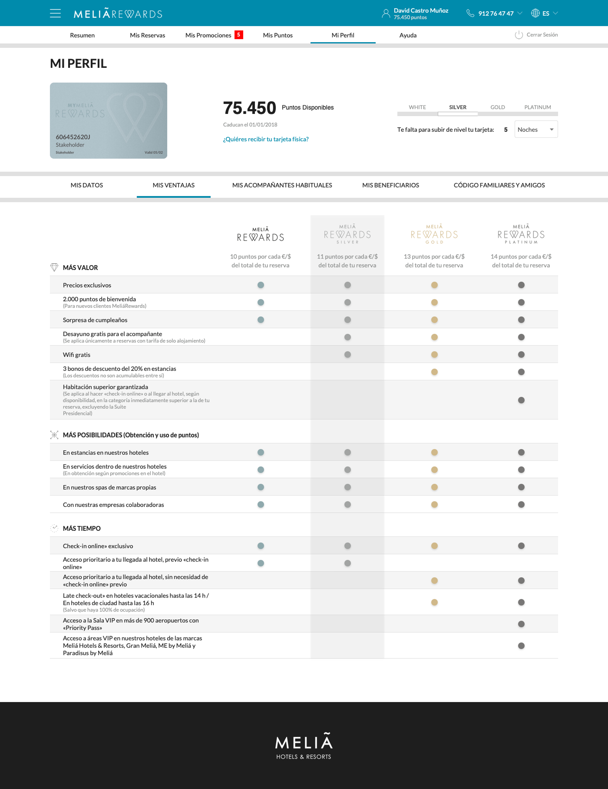
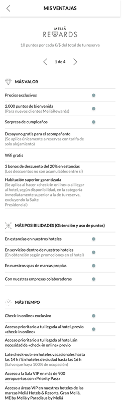

Contexto
El reto
Meliá Rewards es el programa de fidelidad de Meliá Hotels International que permite a los clientes acumular puntos por estancia y acceder a beneficios exclusivos como upgrades de habitación, late check-out o servicios premium. El programa contaba con una web propia donde los usuarios podían gestionar su perfil, consultar sus puntos y acceder a sus beneficios, pero la experiencia presentaba problemas estructurales que afectaban directamente a la percepción del valor del programa.
La arquitectura de información dificultaba que los usuarios comprendieran cómo funcionaba el programa y qué beneficios obtenían en función de su nivel. La información sobre puntos, ventajas y estado del usuario estaba fragmentada en distintas secciones, lo que obligaba a realizar múltiples pasos para acceder a acciones básicas. Además, la experiencia del programa no estaba alineada con las expectativas reales de los usuarios ni con los objetivos de negocio, ya que el proceso de reserva de hoteles, la organización de la información y los flujos de navegación funcionaban de forma desconectada.
Mi rol
Como UX Designer del proyecto, lideré el proceso de investigación con usuarios y la definición de la arquitectura de información y los flujos de navegación del rediseño. Trabajé en estrecha colaboración con el equipo de producto del departamento de fidelización de Meliá Rewards para asegurar que las decisiones de diseño estuvieran alineadas con los objetivos estratégicos del programa y con la visión del negocio. Colaboré también con un Visual Designer que se encargó de la capa estética final, mientras que mis prototipos funcionales incluían una capa visual propia que permitía validar interacciones y flujos con usuarios reales antes de pasar a diseño definitivo.
Proceso
Research exhaustivo como base de las decisiones
Antes de proponer ningún cambio estructural, era necesario comprender en profundidad cómo los usuarios interactuaban con el programa y dónde estaban los puntos de mayor fricción. El proceso de investigación combinó distintas técnicas cualitativas y cuantitativas: un análisis heurístico del producto para identificar problemas de usabilidad e inconsistencias, entrevistas con usuarios reales del programa para entender sus expectativas y comportamientos, tests de usabilidad para detectar problemas, y sesiones de focus group para profundizar en la percepción del valor del programa.
Los insights obtenidos fueron concretos: los usuarios no comprendían claramente cómo funciona el programa ni cómo progresar entre niveles, la gestión de puntos y beneficios requería demasiados pasos dentro de la navegación, y existía una desconexión clara entre el programa de fidelización y el proceso de reserva de hoteles que afectaba a la coherencia percibida del ecosistema digital de Meliá.

Redefinir la arquitectura de información desde el modelo mental del usuario
Con los insights del research definidos, la decisión más importante fue redefinir completamente la arquitectura de información del programa. Para validar que la nueva estructura se alineaba con el modelo mental de los usuarios, utilizamos card sorting, una técnica que permite identificar cómo los propios usuarios organizan y agrupan la información de forma natural.
A partir de los resultados, reorganizamos los contenidos priorizando lo que más importaba al usuario en cada momento: su nivel dentro del programa, los beneficios disponibles y las acciones más relevantes. El objetivo era que cualquier usuario pudiera entender de forma inmediata su situación dentro del programa y las ventajas asociadas, sin necesidad de navegar por múltiples secciones para obtener información básica.

Simplificar la navegación, prototipar y validar con usuarios
Con la arquitectura definida, la siguiente decisión fue simplificar los flujos de navegación para facilitar el acceso a las acciones más frecuentes desde cualquier dispositivo. Esto incluyó también alinear la experiencia del programa con el proceso de reserva de hoteles, resolviendo la desconexión que los usuarios habían identificado en el research.
El diseño se desarrolló de forma iterativa mediante prototipos funcionales en Axure y Sketch, a los que añadí una capa visual propia para que las sesiones de validación con usuarios fueran lo más realistas posible. Cada iteración se probó con usuarios reales, lo que permitió ajustar flujos, jerarquía visual y copy antes de pasar a diseño definitivo, reduciendo el riesgo de errores en la implementación.


Impacto
El rediseño de Meliá Rewards tuvo un impacto directo y medible en la experiencia de usuario. Los tests de usabilidad realizados con usuarios reales del programa arrojaron un NPS superior al 85% y puntuaciones muy positivas en la escala SUS, validando que las decisiones de diseño adoptadas estaban alineadas con las expectativas reales de los usuarios.
Más allá de las métricas, el proyecto permitió definir un roadmap priorizado de mejoras futuras a partir de los insights obtenidos durante la investigación, conectando directamente las decisiones de diseño con los objetivos estratégicos del programa de fidelización.
Aprendizajes
El proyecto me dejó dos aprendizajes que aplico ahora en cualquier proyecto donde la experiencia tiene un componente estratégico y de negocio relevante.
La arquitectura de información es la base de cualquier experiencia comprensible. En Meliá Rewards el problema no era visual, sino era estructural. Los usuarios no comprendían el valor del programa porque la información estaba organizada siguiendo la lógica interna del negocio, no el modelo mental de los usuarios. Usar card sorting para validar cómo los propios usuarios organizaban la información fue la decisión que permitió construir una arquitectura que realmente funcionaba para ellos.
Validar con usuarios reales cambia las decisiones de diseño. Durante el research, muchas de las hipótesis iniciales que teníamos sobre los problemas del programa resultaron ser incorrectas o incompletas. Las entrevistas, los tests de usabilidad y los focus groups revelaron fricciones que no eran visibles desde dentro del proyecto. Esa distancia entre lo que el equipo asumía y lo que los usuarios realmente experimentaban reforzó para mí la importancia de investigar antes de diseñar, incluso cuando el problema parece evidente.